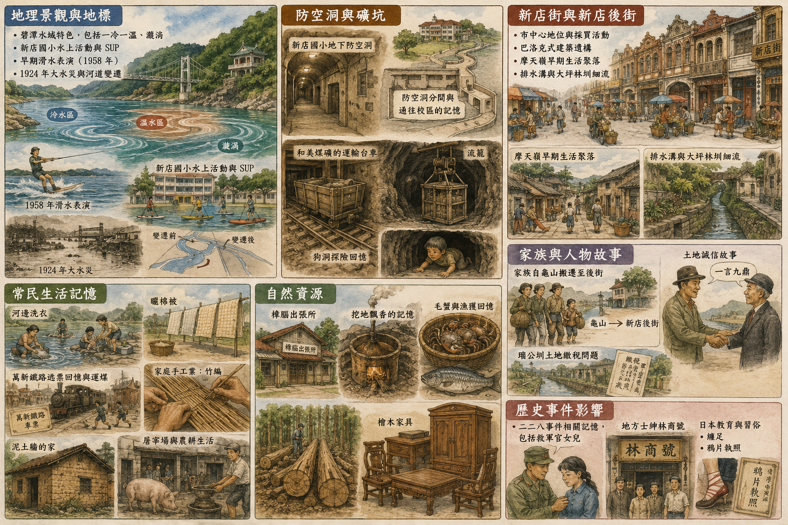

劉大嫂與新店街、後街風華

| 主題 | 內容 |
|---|---|
| 地理景觀與地標 | 碧潭水域特色，包括一冷一溫、漩渦；新店國小水上活動與 SUP；早期滑水表演（1958 年）；1924 年大水災與河道變遷。 |
| 防空洞與礦坑 | 新店國小地下防空洞；防空洞分間與通往校區的記憶；和美煤礦的運輸台車、流籠；狗洞探險回憶。 |
| 新店街與新店後街 | 市中心地位與採買活動；巴洛克式建築遺構；摩天嶺早期生活聚落；排水溝與大坪林圳細流。 |
| 常民生活記憶 | 河邊洗衣、曬棉被；萬新鐵路逃票回憶與運煤；家庭手工業，如竹編與泥土牆；屠宰場與農耕生活。 |
| 自然資源 | 樟腦出張所與挖地飄香的記憶；毛蟹與漁獲回憶；檜木家具與山林資源。 |
| 家族與人物故事 | 家族自龜山搬遷至後街；土地誠信故事與一言九鼎；瑠公圳土地繳稅問題。 |
| 歷史事件影響 | 二二八事件相關記憶，包括救軍官女兒；地方士紳林商號；日本教育與習俗，如纏足、鴉片執照。 |